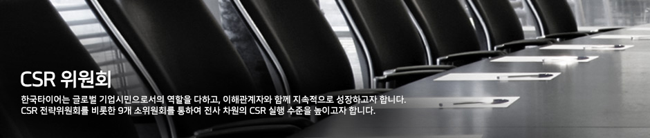
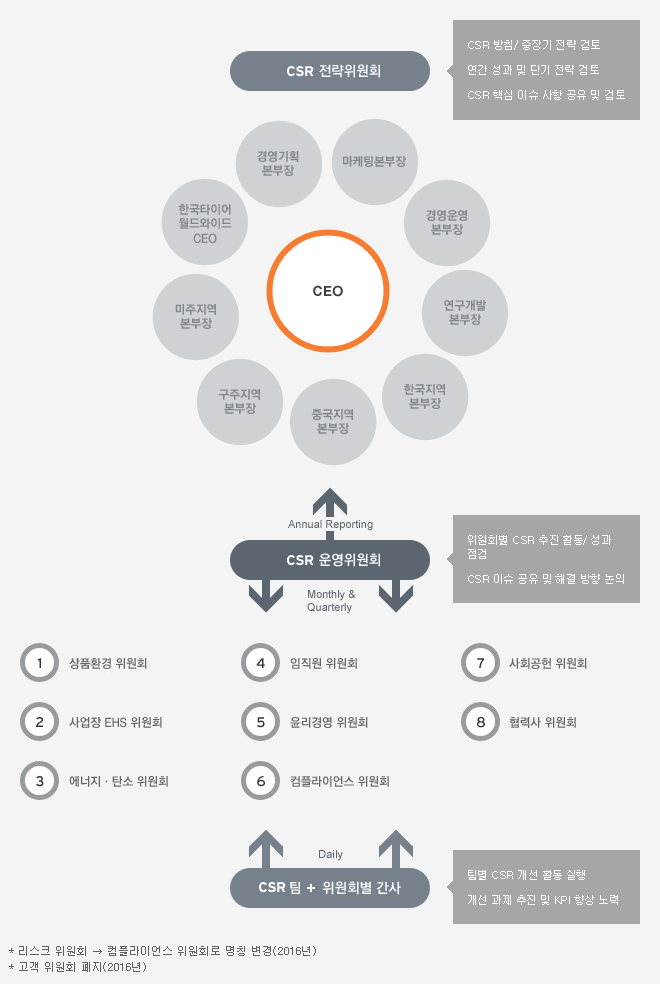
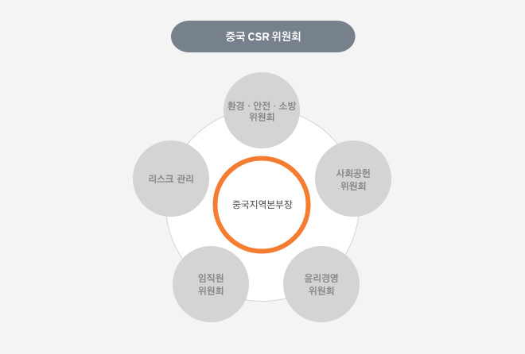
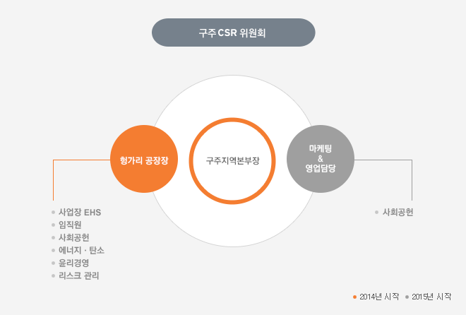
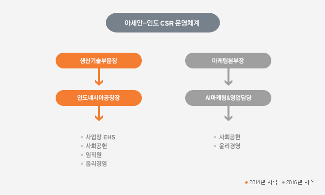

CSR Governance(CSR Committee)
전사적 통합 CSR 실행을 위해 CEO 주관의 CSR전략위원회와 9개 CSR 소위원회를 운영하고 있으며 정기적인 보고와 점검을 통해 성과와 계획이 연계되도록 노력합니다.

한국타이어는 CSR 활동이 임직원들의 업무에 자연스럽게 적용되도록 하기 위해 위원회를 운영하고 있습니다. 매년 1월 각 해당 팀에 CSR 위원회 조정 사항을 안내하고 위원회 활동을 요청합니다. 2월에는 CSR 위원회 운영효율화를 위해 핵심 관리 이슈 중 위원회 별 CSR 과제를 CSR팀과 협의하여 선정하고 추진 계획을 수립합니다. 매 분기 열리는 개별 위원회에서는 유관 부서들이 과제 수행 중 새로 파악된 이슈를 함께 논의하고 차년도의 실행 목표와 방향에 대해서도 협의하게 됩니다. CSR팀은 위원회가 개최될 때 항상 참여하여 실행 상황을 확인하며 내외부 이해관계자 설문, 외부 전문기관의 평가 결과, 선진기업 벤치마크 등을 분석하여 중요 이슈에 대한 자문을 제공하고 있습니다. 이와 같이 위원회에서 논의되는 모든 사항은 매년 11월 개최되는 CSR 전략보고회에서 CEO를 포함한 CSR 전략위원회에 의안으로 상정되며 향후 방향성에 대한 의사결정이 이루어집니다. 2015년 11월에는 연간 추진 실적 및 차년도 계획에 대한 승인뿐 아니라 ‘기업과 신뢰’, ‘사회공헌활동과 브랜드 연계’라는 주제로 토론을 진행하여 한국타이어 CSR의 미래 모습에 대해 추가 논의하였습니다.
중국CSR위원회 운영
중국지역본부 내 중국 CSR 위원회를 설립하여 운영하고 있으며, 매년 중국지역본부장이 주관하는 CSR 전략회의를 개최하여 현지에서의 CSR 확산과 정착을 촉진하고 있습니다.

한국타이어 중국지역본부에서는 중국 내 정치, 경제, 사회, 환경적 상황에 따른 중요 이슈를 파악하여 대응하고자 2012년 3월 중국 CSR 위원회를 설립하였습니다. 4개 위원회와 1개 팀의 일상 업무 체계로 구성하여, 환경·안전·소방, 임직원, 사회공헌, 윤리경영, 리스크관리를 포함하는 5개 CSR 영역으로 관리하고 있습니다. 2015년 중국 CSR 위원회는 중)전략기획팀 주관 아래 회의체를 운영하였으며, 연말에는 중국 CSR 전략회의를 열어 각 위원회별 성과와 이슈를 공유하고 논의하였습니다. 2016년 계획은 본사 CSR 팀에서 배포한 중국 전략가이드를 참고하여 수립하였습니다. 중국 전략가이드는 내외부 이해관계자 설문과 외부 전문기관의 평가 결과, 그리고 선진 기업 벤치마크를 바탕으로 중요도와 우선 순위를 고려하여 작성되었습니다. 또한 중국지역본부에서는 현지의 이해관계자들과 더욱 적극적으로 소통하고 정보를 공유하고자 본사 CSR팀의 지원으로 CSR 활동 성과와 반성, 계획을 담은 중국 CSR 보고서를 발간하였습니다. 2013년과 2014년 내부용 CSR 보고서를 2회 발간하며 준비기간을 가졌고, 2015년 9월에 타사 사례 벤치마크, 국제 가이드라인 반영 등을 통해 수준을 향상시킨 중국 현지 CSR 보고서를 공식 발간 하였습니다. 중국 CSR 보고서는 중국사회과학원의 검토를 거쳐 보고서 발간 프로세스와 구성, 사회책임 활동에 관한 신뢰성을 높였으며, 종합 점수 5점 만점 중 4점을 획득하여 우수 보고서라는 평가를 받았습니다.
구주CSR위원회 운영
구주지역본부에서는 헝가리공장과 구주마케팅&영업을 아우르는 CSR 운영체계를 갖추고 현지 환경과 여건을 감안한 6개 영역에서 다양한 CSR 활동을 펼치고 있습니다.

구주지역본부의 통합 CSR 관리를 위해 2013년 11월 구축한 구주지역본부 CSR 운영 체계는 지역 환경과 여건을 반영하여 사업장 EHS, 에너지·탄소, 임직원, 윤리경영, 사회공헌, 리스크관리의 6개 영역으로 구성되었습니다. 효율적인 운영을 위해 팀 단위의 업무 영역별로 관리하고 있으며, 헝가리공장장에게 CSR 활동 성과를 분기별로 보고합니다. 구주지역본부장은 지난 1년간의 성과 와 차기 계획을 매년 보고받고 향후 방향성에 대하여 승인합니다. 2015년 본사 CSR팀은 내외부 이해관계자 설문, 외부 전문기관 평가 결과, 선진기업 벤치마크를 바탕으로 작성한 전략가이드를 배포하여 헝가리공장의 CSR 계획 수립과 활동을 지원하였습니다. 또한 분기별 모니터링을 통해 성과를 점검하고 이슈 사항을 논의 하였습니다. 이와 같은 노력으로 글로벌 CSR 전략과 헝가리 지역의 특수성을 모두 반영한 효과적 CSR 활동을 펼칠 수 있었습니다. 2015년에는 헝가리공장뿐만 아니라 구주지역본부 마케팅&영업 담당의 사회공헌활동도 본사 관리 영역으로 설정하였으며, 2015 년 말 수립한 계획을 바탕으로 2016년부터 체계적인 활동을 진행 할 예정입니다.
아세안-인도 CSR 운영체계 수립
인도네시아공장과 아세안-인도마케팅&영업으로 글로벌 CSR 운영체계를 확산하여 현지 특성과 여건을 반영한 체계적인 CSR 활동을 수행하고 있습니다.

글로벌 CSR 운영체계 확산과 정착을 위해 한국, 중국, 유럽에 이어 지난 2014년 인도네시아와 아세안-인도 지역의 CSR 운영체계를 수립하였습니다. 지역적 특성과 현황을 반영하여 인도네시아공장에서는 사업장 EHS, 사회공헌, 임직원, 윤리경영의 4개 영역을, 아 세안-인도마케팅&영업은 사회공헌, 윤리경영 2개 영역을 CSR 운영 범위로 설정하였습니다. 2015년은 인도네시아공장의 CSR 운영체계 정착을 위해 더욱 다양한 CSR 활동을 수행하였으며, 2016년 에는 아세안-인도마케팅&영업까지 확산하여 운영될 예정입니다.